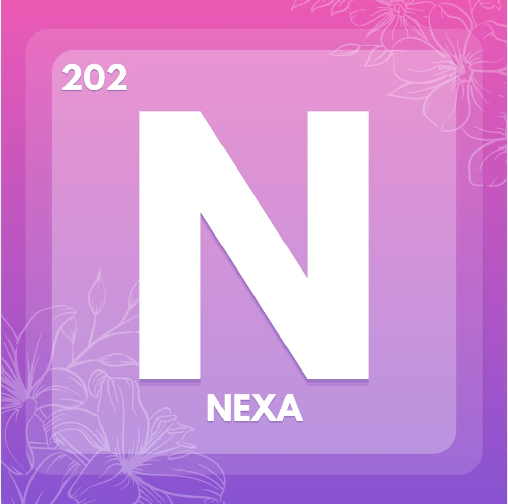

Converse com
profissionais
Procure médicos, enfermeiros ou psicólogos sempre que precisar de orientação.

Receber orientação correta é o primeiro passo para cuidar da sua saúde com segurança, confiança e autonomia.
Procure médicos, enfermeiros ou psicólogos sempre que precisar de orientação.
Respeite as orientações recebidas e mantenha seus exames e consultas em dia.
Escute seu corpo e não ignore sinais de alerta. Orientação precoce evita problemas.
Você não está sozinha. Procure apoio de pessoas e serviços que te orientem e fortaleçam.
Informar-se, orientar-se e seguir cuidando de você é um ato de amor próprio.